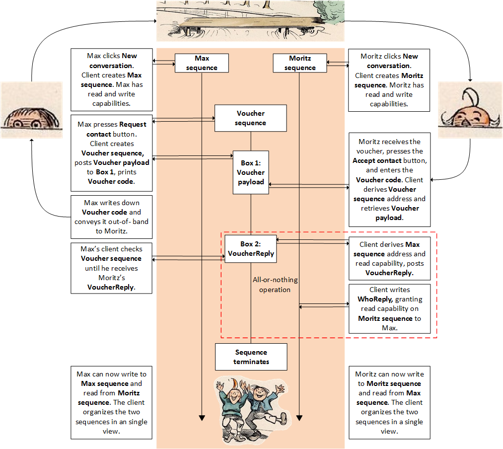

This guide text and audio chat clients that use a Katzenpost mixnet to relay communications. Katzenpost chat clients allow you to share share one-to-one and group messages securely with other client users. Katzenpost employs cutting-edge encryption at all levels, but its special goal is to provide user anonymity. While encryption protects the content of communication, anonymity protects the people behind it.
For technical information about Katzenpost and mixnets in general, see Learn Mix Networks for Great Good and the Katzenpost Documentation. To learn about our motivations for protecting anonymity, see Frequently asked questions below.
For mobile clients, the software decribed in this guide requires a device running Android or an Android derivative on arm64 hardware. We have tested the clients and dependencies on Android 17 and on GrapheneOS 2026111800.
For desktop clients, the software decribed in this guide requires a computer that supports the Linux operating system on amd64 hardware. We have tested the clients and dependencies on the Debian GNU/Linux 13.8 and Ubuntu 26.04 Linux distributions.
All Katzenpost chat clients require a local daemon to be running,
kpclientd. The daemon acts as a bridge between clients and the
mixnet, handling network connections, performing encryption and decryption, and
generating dummy network traffic to hide user activity from eavesdroppers. Any number
of
clients can simultaneously connect to the daemon.
The client daemon currently runs against the demonstration
namenlos, a distributed, real-world implementation of
Katzenpostmixnet. The packaged kpclientd binary embeds gateway
IP addresses needed to access the mixnet, allowing client users to connect
automatically. For more information about namenlos, see xxxx.
Before installing an running any client, first download and install and start the daemon appropriate for your platform.
To install on Android
Complete the following procedure to get kpclientd running on your
Android device.
Download the latest kpclientd
APK file. On the Katzenpost website homepage, choose Download a
client, find the Android section, find
the kpclientd-android section, and then choose
Phone APK.
Locate the downloaded file in Downloads and tap on it
to install, granting Android system permissions as needed.
After installation, start the KP Daemon app, granting Android system permissions as needed.
The app initially displays Daemon is stopped. Tap on the white triangle to start the daemon.
The daemon should now be ready to receive connections. You can tap the expansion widget at the bottom of the screen to observe live logs of the daemon's activity.
To install on the Linux desktop
Complete the following procedure to get kpclientd running on your
Linux desktop or laptop computer (either Ubuntu or Debian.)
Download the latest kpclientd
DEB file. On the Katzenpost website homepage, choose Download a
client, find the Linux desktop section,
find the kpclientdsection, and then choose
.deb.
With root permissions, install the downloaded daemon file.
#dpkg -i kpclientd_0.0.xxx_amd64.debAfter installation, enable and start the daemon.
#systemctl enable kpclientd#systemctl start kpclientd
You can observe the activity of the daemon as shown in the following example, which displays a few lines of start-up logging.
#journalctl -f -u kpclientd
Nov 22 16:26:30 xxxx systemd[1]: Started kpclientd.service - Katzenpost thin client daemon.
Nov 22 16:26:30 xxxx kpclientd[2227868]: 16:26:30.690 NOTI katzenpost/client: Katzenpost client daemon version: 0.0.111
Nov 22 16:26:30 xxxx kpclientd[2227868]: 16:26:30.690 NOTI katzenpost/client: Katzenpost is still pre-alpha. DO NOT DEPEND ON IT FOR STRONG SECURITY OR ANONYMITY.
Nov 22 16:26:30 xxxx kpclientd[2227868]: 16:26:30.690 INFO katzenpost/client: Pyroscope is disabled
Nov 22 16:26:30 xxxx kpclientd[2227868]: 16:26:30.690 INFO client/listener: Listening on: @katzenpost
Nov 22 16:26:35 xxxx kpclientd[2227868]: 16:26:35.148 NOTI client/conn: Connected to gateway.Hushphone is Katzenpost's flagship chat client. It has the following features.
Text chat
Audio chat
Unlimited groups
Group member polls
Group member ping
Desktop support on Linux
Mobile support on Android
Reticulum mesh support on mobile
To install on Android
Complete the following procedure to install Hushphone on your Android device.
Download the latest hushphone APK
file. On the Katzenpost
website homepage, choose Download a client,
find the Android section, find the hushphone section, and then choose
Phone APK.
Locate the downloaded file in Downloads and tap on it
to install, granting Android system permissions as needed.
To install on the Linux Desktop
Complete the following procedure to install Hushphone on your Linux system.
Download the latest hushphone DEB
file for your Linux distribution. On the Katzenpost website
homepage, choose Download a client, find the
Linux desktop section, find the
hushphone section, and then
choose the appropriate .deb. button for your
system.
With root permissions, install the downloaded client file as in the following example for Debian.
#dpkg -i hushphone-v0.xxx.xxx-debian-13-amd64.debFor illustrated instructions on using Hushphone, choose the guide for your platform.
The Katzenpost team provides source code for several experimental chat clients. All of these are Linux desktop applications. You can find the following clients on the client download page.
katzenqt (DEB package available)
Installation and use instructions for these clients are included in their respective GitHub READMEs.
Here are some examples of users who require anonymity.
People and groups who are likely to be under surveillance by government entities, whether dishonest bureaucrats, corrupt police forces, or intelligence agencies.
People facing business or government censorship.
Businesses aware of the dangers of leaking internal information to their local and global competitors or to their own or other governments.
Journalists, and anyone who communicates with a journalist.
Whistle-blowers.
Lawyers and non-profit organizations engaging in advocacy that earns them enemies with powerful surveillance capabilities.
People worried about the utter insecurity of personal data stored in both cloud and on-premises databases that are accessible from the Internet.
People who want to use the Internet but dislike being the raw material that feeds surveillance capitalism.
Not necessarily. Your identity and other metadata may be more interesting to snoops than your data (what you say). Your network of contacts – who is talking to whom – is often the most valuable information about you. Legal protections for metadata are weaker than for communication content. Here are some examples:
Internet businesses routinely harvest and sell sensitive identity data to profit from invasively personalized ads and other sources.
Governments, especially law enforcement, will collect and store any data about your identity, movements, employment, and political views that they can get their hands on, sacrificing the privacy of millions of innocent people in hopes of catching a tiny number of suspected criminals.
Actual criminals make daily use of the data they steal from these same businesses and governments, enabling identity theft, credit-card fraud, and extortion.
While the content of telephone communication is shielded by strong limitations on wire-tapping, far weaker rules restrict the use of pen register / trap and trace devices to capture the identities of people engaged in private conversations.
The United States Postal Service routinely photographs and stores the address information of mail passing through its system. The USPS almost never denies requests for this information from law enforcement and others.
Most dramatically, US intelligence agencies use cell phone metadata (account data and geolocation) to target suspected terrorists for drone and missile attacks. As National Security Agency Director Gen. Michael Hayden famously stated, "We kill people based on metadata."
You do not decide if you have something to hide. The businesses, governments, and individuals snooping into your data decide that. It is better not to give them the chance.
The Katzenpost system devotes a great deal of engineering effort to prevent surveillance adversaries from discovering who you are and whom you are talking with. Importantly, after your initial meeting to hand off an invitation, you have no actual contact with your contacts. Instead, users communicate solely with the Katzenpost mixnet, which serves as a dead-drop for each user's messages.
Here is a very sparse summary of how the pieces fit together to provide usable communication despite all of the anonymization and indirection.
Groups are the main organizing principle in a client.
Contacts are members of a group, and they exist only in the context of a particular group. Contacts should have no discoverable relation to real-world identities, or even to repeated instances of themselves. All names are display names. All display names are arbitrary.
Groups may have any number of contacts, including just two for one-on-one conversations.
The conversations that you see listed in Conversations and contacts are ones that you created and named. Your contacts see their own conversations that they created and named.
When you create a group, you are also creating a message stream. A message stream is an address in the distributed internal storage of the mixnet. It can contain any number of linked, ordered messages posted there by its owner.
You have write permissions to message streams that you created. Nobody else does.
You can share read permissions to a message stream that you created with other users. (And vice versa.)
The view of a group that you see in your Messages pane is a virtual message log collated by Hushphone or whatever client you are using. It is based on read permissions that you and your contacts have mutually shared in this specific context. This is how you can all see the same virtual log of messages when you are each looking at a different conversation.
The OOB invitation is the first step in guaranteeing anonymity in the face of electronic surveillance. It is explicitly not electronic. OOB is a solution to a difficult and fundamental problem of encrypted communications: key exchange. A real-world solution recommends itself because almost no electronic solution protects anonymity.
The following diagram details the data exchanges involved in setting up contacts. For more information, see Katzenpost Group Chat Design.

Figure 16. This diagram illustrates how Hushphone (and its operators, Max and Moritz) interact with the Katzenpost mix network. The most distinctive features of this architecture are the initial out-of-band step to authenticate a user and the dead-drop structure that allows subsequent electronic communication that is neither direct nor persistent.
We do not plan to offer video chat. Mixnet-based communications have high latency by design. This has little impact on low-bandwidth text communications and highly compressed audio data, but it is very likely disqualifying for video. For more information, see Audio Engineering Considerations for a Modern Mixnet.
Let's take "this" as meaning end-to-end encryption and metadata minimization. The answer depends on your legal jurisdiction and the political weather. Countries such as China and Iran that attempt to exert complete and ruthless control over citizens' communication would probably forbid and block use of Katzenpost just as they do Signal and Tor, with a full range of possible punishments for offenders. However, Western democracies also enforce comprehensive surveillance over their citizens, particularly as a tool for law enforcement or elastically defined "national security." The United States, the United Kingdom, and members of the European Union try constantly to expand legal surveillance and to pass laws mandating backdoors in encrypted devices, so far being thwarted either by public advocacy or by the commercial self-interest of technology vendors. Users of surveillance-resistant communication tools must understand the laws that apply to them, keep in mind the ways that those laws are stretched and broken by corrupt police, and protect themselves appropriately. If you plan to violate your local laws while trusting in clever technology to keep you safe, remember that you must make excellent technology choices, use the tools perfectly, maintain operational security worthy of a clandestine agent, have trustworthy partners, and also have very good luck. In a genuinely threatening environment, the wisest path is often to avoid technological solutions altogether.
Katzenpost was created by a team of programmers, cryptographers, mathematicians, academics, tech industry veterans, and privacy advocates. Our current core contributors and past contributors are listed at Katzenpost Team, and you can see who has been doing what by visiting our GitHub site.